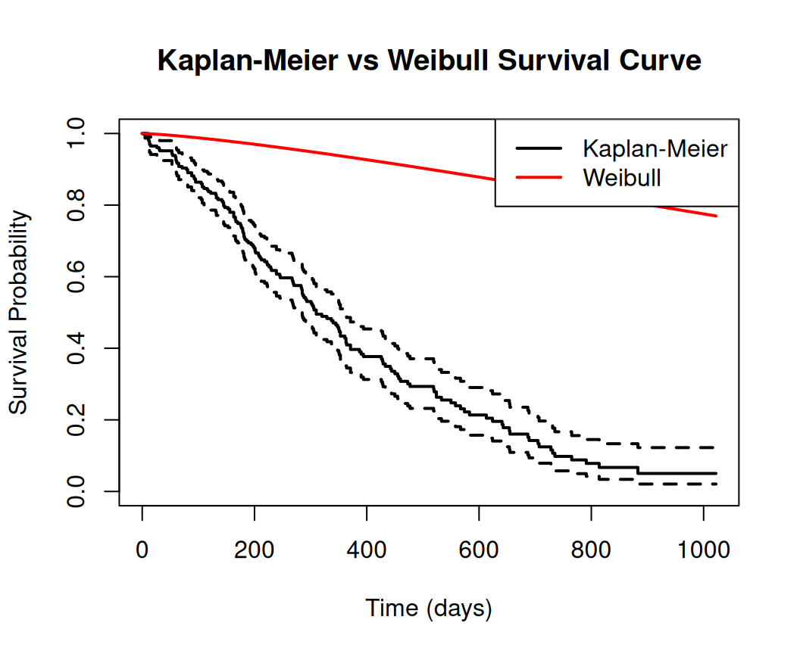
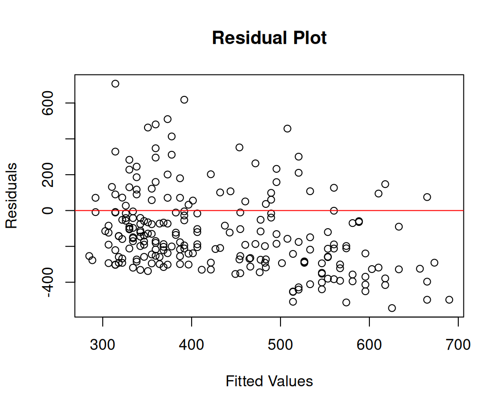
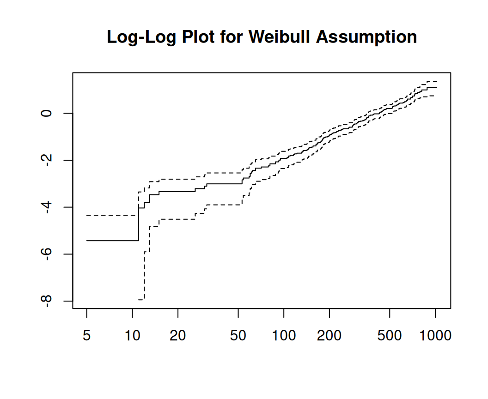

This tutorial demonstrates how to fit and interpret a Weibull model for survival analysis in R. The Weibull model is a flexible parametric model that allows for increasing, decreasing, or constant hazard rates, making it more versatile than the exponential model.
Overview
The Weibull model is a versatile parametric model in survival analysis, capable of modeling increasing, decreasing, or constant hazard rates. Below, I derive the key mathematical functions for the Weibull distribution—probability density function (PDF), survival function, hazard function, and cumulative hazard function—starting from first principles. I’ll keep the derivation clear and concise, focusing on the standard two-parameter Weibull distribution commonly used in survival analysis.
Parameters
The Weibull distribution is characterized by two parameters:
\(\lambda > 0\): Scale parameter, related to the characteristic life or spread of the distribution.
\((p > 0\): Shape parameter, which determines the behavior of the hazard function:
\(p < 1\): Decreasing hazard (e.g., early failures).
\(p = 1\): Constant hazard (reduces to the exponential model).
The random variable \(T\) represents the survival time (\(T\geq 0\)).
Probability Density Function (PDF)
The PDF, \(f(t)\), describes the probability density of the event occurring at time \(t\).
Derivation:
The Weibull PDF is defined as:
\[
f(t) = p \lambda^p t^{p-1} e^{-(\lambda t)^p}, \quad t \geq 0, \quad \lambda, p > 0
\]
Origin: The Weibull distribution generalizes the exponential distribution. For the exponential (\(p = 1\)), the PDF is \(f(t) = \lambda e^{-\lambda t}\). The Weibull introduces the shape parameter \(p\), which modifies the time scale via \(t^{p-1}\) and the exponential term via \((\lambda t)^p\).
Normalization: To ensure \(f(t)\) is a valid PDF, it must integrate to 1 over \([0, \infty)\):
\[
\int_0^\infty p \lambda^p \left(\frac{u^{1/p}}{\lambda}\right)^{p-1} e^{-u} \cdot \frac{1}{p} \lambda^{-1} u^{1/p - 1} \, du
\] Simplify: \[
= \int_0^\infty p \lambda^p \cdot \lambda^{1-p} u^{(p-1)/p} \cdot \frac{1}{p} \lambda^{-1} u^{1/p - 1} e^{-u} \, du
= \int_0^\infty \lambda^{p - (p-1) - 1} u^{(p-1)/p + 1/p - 1} e^{-u} \, du
= \int_0^\infty e^{-u} \, du = 1
\] This confirms the PDF is properly normalized.
Survival Function
The survival function, \(S(t) = P(T > t)\), is the probability of surviving past time \(t\). It is derived from the cumulative distribution function (CDF), \(F(t) = P(T \leq t)\).
Derivation:
The CDF is the integral of the PDF:
\[
F(t) = \int_0^t f(u) \, du = \int_0^t p \lambda^p u^{p-1} e^{-(\lambda u)^p} \, du
\] Using the same substitution as above, \(v = (\lambda u)^p\), \(u = v^{1/p} / \lambda\), \(du = \frac{1}{p} \lambda^{-1} v^{1/p - 1} \, dv\):
\[
F(t) = \int_0^{(\lambda t)^p} p \lambda^p \left(\frac{v^{1/p}}{\lambda}\right)^{p-1} e^{-v} \cdot \frac{1}{p} \lambda^{-1} v^{1/p - 1} \, dv
= \int_0^{(\lambda t)^p} e^{-v} \, dv = \left[ -e^{-v} \right]_0^{(\lambda t)^p} = 1 - e^{-(\lambda t)^p}
\] Thus, the survival function is: \[
S(t) = 1 - F(t) = e^{-(\lambda t)^p}
\] - Properties:
\(S(0) = e^0 = 1\) (100% survival at \(t = 0\)).
As \(t \to \infty\), \(S(t) \to 0\).
When \(p = 1\), \(S(t) = e^{-\lambda t}\), recovering the exponential survival function.
Hazard Function
The hazard function, \(h(t)\), is the instantaneous rate of the event occurring at time \(t\), given survival up to \(t\). It is defined as:
Special Case: When \(p = 1\), the Weibull reduces to the exponential model (\(f(t) = \lambda e^{-\lambda t}\), \(S(t) = e^{-\lambda t}\), \(h(t) = \lambda\).
Practical Use: In R’s survreg (from the survival package), the Weibull model is fit with dist = "weibull". The scale parameter is \(\lambda = \exp(-\text{Intercept}/\text{scale})\), and the shape parameter is \(p = 1/\text{scale}\).
Flexibility: The Weibull’s ability to model non-constant hazards makes it widely applicable in reliability engineering, medical survival analysis, and more.
These derivations show how the Weibull functions are interconnected, with the shape parameter (p) providing flexibility over the exponential model.
Implementation in R
We’ll use the survival package to fit the model, interpret results, make predictions, and visualize outputs. We’ll use the lung dataset from the survival package for demonstration.
Install Required R Packages
Following R packages are required to run this notebook. If any of these packages are not installed, you can install them using the code below:
We’ll use the built-in lung dataset from the survival package for demonstration. This dataset contains survival times for patients with advanced lung cancer. Key variables:
time: Survival time in days.
status: Censoring indicator (1 = censored, 2 = dead; we’ll recode it to 0/1 for standard use).
The Weibull model is fit using survreg() with dist = "weibull". The Weibull model can be parameterized as an Accelerated Failure Time (AFT) model, where the survival time follows a Weibull distribution. The model estimates a scale parameter (\(\lambda\)) and a shape parameter (\(p\)), where:
\(p > 1\): Increasing hazard rate.
\(p < 1\): Decreasing hazard rate.
\(p = 1\): Constant hazard (equivalent to exponential).
Without Covariates (Intercept-Only Model)
Fit a basic Weibull model to estimate baseline survival.
Code
# Fit the Weibull modelweibull_model <-survreg(surv_object ~1, data = lung, dist ="weibull")# View summarysummary(weibull_model)
Call:
survreg(formula = surv_object ~ 1, data = lung, dist = "weibull")
Value Std. Error z p
(Intercept) 6.0349 0.0591 102.05 <2e-16
Log(scale) -0.2752 0.0624 -4.41 1e-05
Scale= 0.759
Weibull distribution
Loglik(model)= -1153.9 Loglik(intercept only)= -1153.9
Number of Newton-Raphson Iterations: 6
n= 228
Output interpretation:
Intercept: Log of the scale parameter (\(log(\lambda)\)).
Log(scale): Related to the shape parameter (\(p = 1 / \text{scale}\)). If \(\log(\text{scale}) < 0\), then \(p > 1\), indicating an increasing hazard.
Hazard function: \(h(t) = \lambda p (\lambda t)^{p-1}\), where \(\lambda = \exp(-\text{Intercept}/\text{scale})\).
Include covariates like age and sex (1 = male, 2 = female) to model their effect on survival time.
Code
# Fit Weibull model with covariatesweibull_model_cov <-survreg(Surv(time, status) ~ age + sex, data = lung, dist ="weibull")# View summarysummary(weibull_model_cov)
Call:
survreg(formula = Surv(time, status) ~ age + sex, data = lung,
dist = "weibull")
Value Std. Error z p
(Intercept) 6.27485 0.48137 13.04 < 2e-16
age -0.01226 0.00696 -1.76 0.0781
sex 0.38209 0.12748 3.00 0.0027
Log(scale) -0.28230 0.06188 -4.56 5.1e-06
Scale= 0.754
Weibull distribution
Loglik(model)= -1147.1 Loglik(intercept only)= -1153.9
Chisq= 13.59 on 2 degrees of freedom, p= 0.0011
Number of Newton-Raphson Iterations: 5
n= 228
Interpretation:
Coefficients are on the log-time scale (AFT model). A positive coefficient increases survival time (decreases hazard).
For example, a positive coefficient for sex suggests females have longer survival times.
Hazard ratio for a covariate: \(\exp(-\text{coefficient} / \text{scale})\).
The shape parameter (\(p = 1 / \text{scale}\)) determines the hazard’s behavior over time.
To test model significance:
Code
anova(weibull_model_cov)
Analysis of Deviance Table
distribution with link
Response: Surv(time, status)
Scale estimated
Terms added sequentially (first to last)
Df Deviance Resid. Df -2*LL Pr(>Chi)
NULL 226 2307.7
age 1 3.9147 225 2303.8 0.047866 *
sex 1 9.6788 224 2294.1 0.001864 **
---
Signif. codes: 0 '***' 0.001 '**' 0.01 '*' 0.05 '.' 0.1 ' ' 1
# For new data (e.g., a 60-year-old male)new_data <-data.frame(age =60, sex =1)predict(weibull_model_cov, newdata = new_data, type ="response")
1
372.977
Survival Probabilities
Calculate survival probabilities at specific times.
Code
# Survival probability at t=500 days for the new datat <-500linear_predictor <-predict(weibull_model_cov, newdata = new_data, type ="lp")p <-1/ weibull_model_cov$scalesurv_prob <-exp(-(t /exp(linear_predictor))^p)surv_prob
1
0.2287682
Plotting and Visualization
Visualize survival curves and check model fit.
Survival Curve
Compare the Weibull model to the non-parametric Kaplan-Meier estimate.
Code
# Fit Kaplan-Meier for comparisonkm_fit <-survfit(surv_object ~1)# Plot KM curveplot(km_fit, main ="Kaplan-Meier vs Weibull Survival Curve", xlab ="Time (days)", ylab ="Survival Probability", col ="black", lwd =2)# Add Weibull curve (null model)t_seq <-seq(0, max(lung$time), length.out =100)lambda <-exp(-coef(weibull_model)[1] / weibull_model$scale)p <-1/ weibull_model$scalesurv_weibull <-exp(-(lambda * t_seq)^p)lines(t_seq, surv_weibull, col ="red", lwd =2)legend("topright", c("Kaplan-Meier", "Weibull"), col =c("black", "red"), lwd =2)

If the Weibull curve closely follows the Kaplan-Meier curve, the model fits well.
# Residual plotplot(predict(weibull_model_cov, type ="response"), residuals(weibull_model_cov), xlab ="Fitted Values", ylab ="Residuals", main ="Residual Plot")abline(h =0, col ="red")

Advanced Topics and Tips
Including More Covariates: Add variables like ph.ecog (performance status) to the model.
Code
weibull_model_full <-survreg(Surv(time, status) ~ age + sex + ph.ecog, data = lung, dist ="weibull")summary(weibull_model_full)
Call:
survreg(formula = Surv(time, status) ~ age + sex + ph.ecog, data = lung,
dist = "weibull")
Value Std. Error z p
(Intercept) 6.27344 0.45358 13.83 < 2e-16
age -0.00748 0.00676 -1.11 0.2690
sex 0.40109 0.12373 3.24 0.0012
ph.ecog -0.33964 0.08348 -4.07 4.7e-05
Log(scale) -0.31319 0.06135 -5.11 3.3e-07
Scale= 0.731
Weibull distribution
Loglik(model)= -1132.4 Loglik(intercept only)= -1147.4
Chisq= 29.98 on 3 degrees of freedom, p= 1.4e-06
Number of Newton-Raphson Iterations: 5
n=227 (1 observation deleted due to missingness)
Alternative Packages: The flexsurv package offers more flexibility for Weibull and other distributions, including proportional hazards parameterization.
Code
#install.packages("flexsurv")library(flexsurv)flexsurv_model <-flexsurvreg(Surv(time, status) ~ age + sex, data = lung, dist ="weibull")# summary(flexsurv_model)
Checking Assumptions: Use cumulative hazard plots or log-log plots to check the Weibull assumption. For log-log:
Code
km_loglog <-survfit(surv_object ~1)plot(km_loglog, fun ="cloglog", main ="Log-Log Plot for Weibull Assumption")

A straight line suggests Weibull is appropriate.
Limitations: If hazards are non-monotonic, consider log-normal or log-logistic models. If the shape parameter is unstable, check data quality or try semi-parametric models (e.g., Cox).
Resources: See the survival vignette (vignette("survival")) or “Applied Survival Analysis” by Hosmer and Lemeshow.
Summary and Conclusion
The Weibull model is a powerful and flexible tool for survival analysis, capable of modeling various hazard shapes. This tutorial covered: - Fitting Weibull models with and without covariates using survreg(). - Interpreting model parameters, including the shape and scale. - Making predictions for survival times and probabilities. - Visualizing survival curves and hazard functions to assess model fit. - Checking model assumptions and exploring advanced topics.
With practice, the Weibull model can provide valuable insights into time-to-event data across various fields, from medical research to engineering reliability. This tutorial serves as a foundation for applying and interpreting Weibull survival models in R.